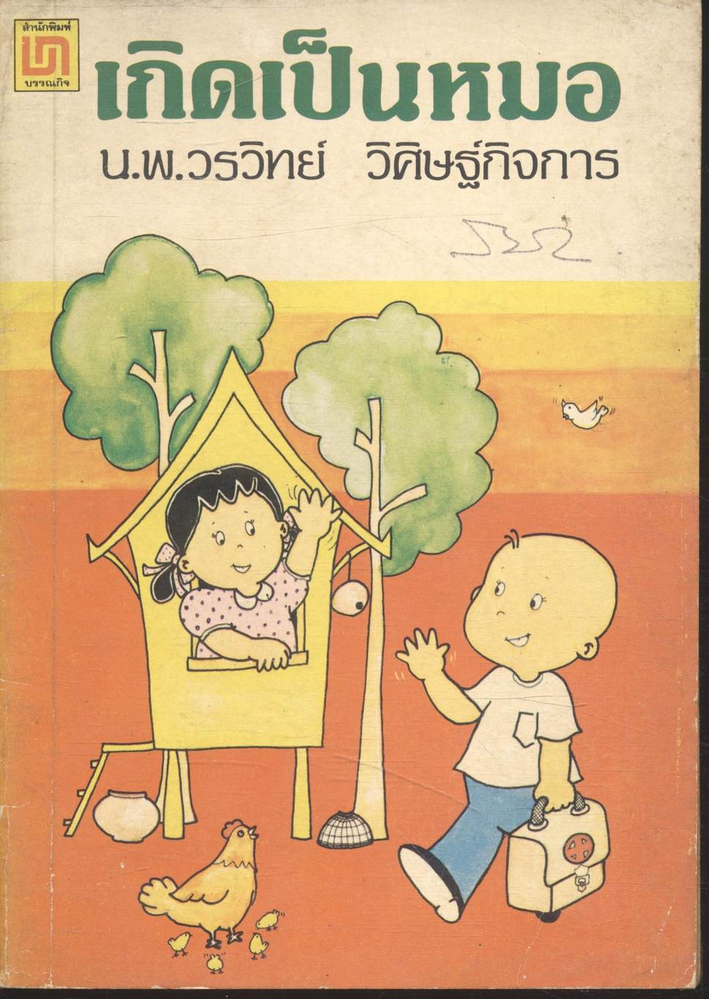
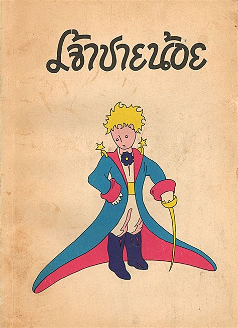
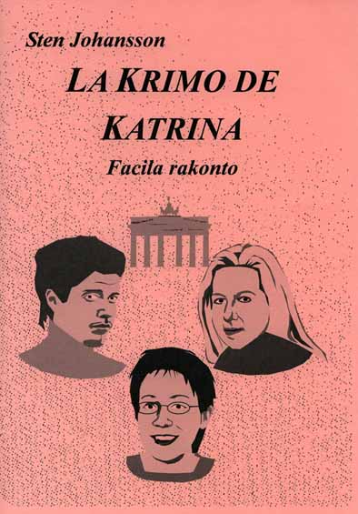
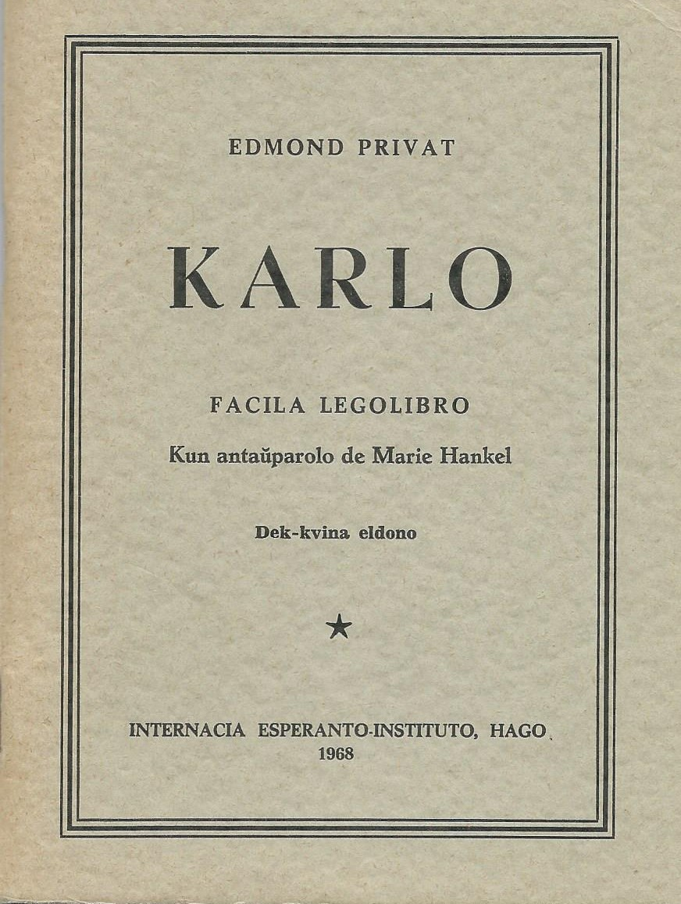
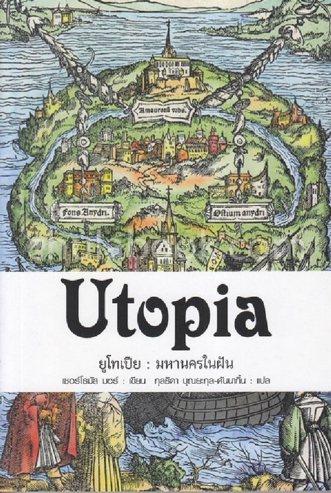
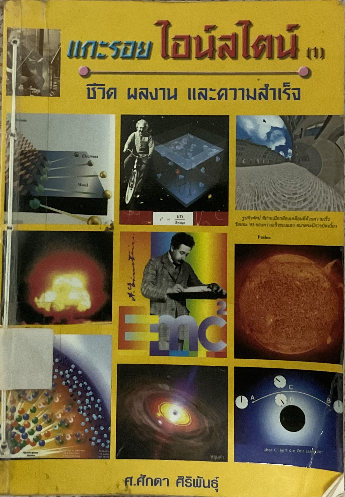
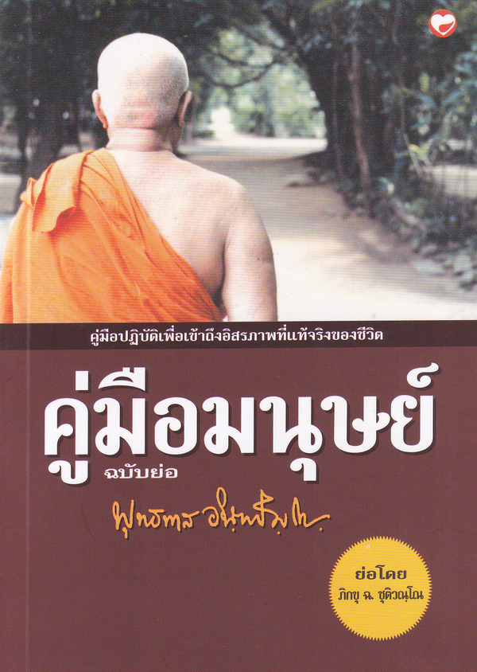
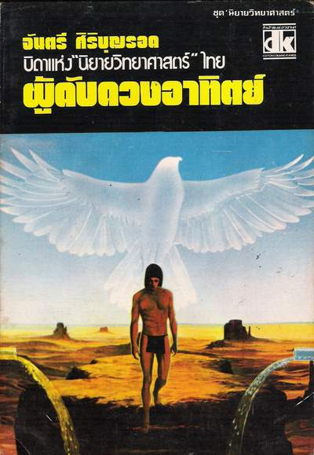
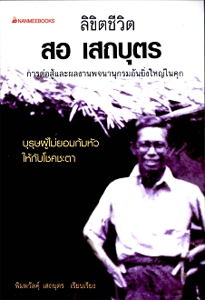

Miaj legitaj libroj.
หนังสือที่ผมอ่านจนจบ
Mi estas kolektanto de libroj, en mia hejmo multas la libroj, pri muziko, lingvoj, vortaroj en diversaj lingvoj, kaj Esperanto, tamen mi nur legis partojn de ili. Jen estas korviloj de libroj, kiujn mi finligis. Kaj mi opinias, ke ili estas interesaj, ili estas nur kelkaj, ĉar mi ne momoras, kiujn librojn mi finlegis antaŭe. Kiam mi havas emon kaj tempon, mi aldonos pli da finlegitaj libroj kaj ankaŭ la kritikojn al ĉiu libro.








